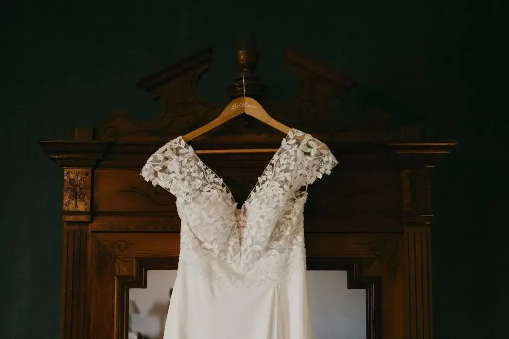
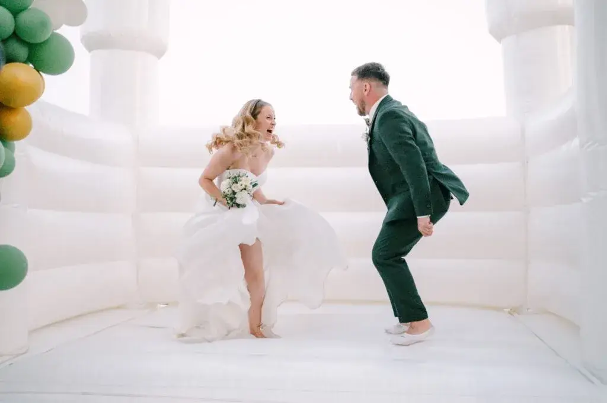
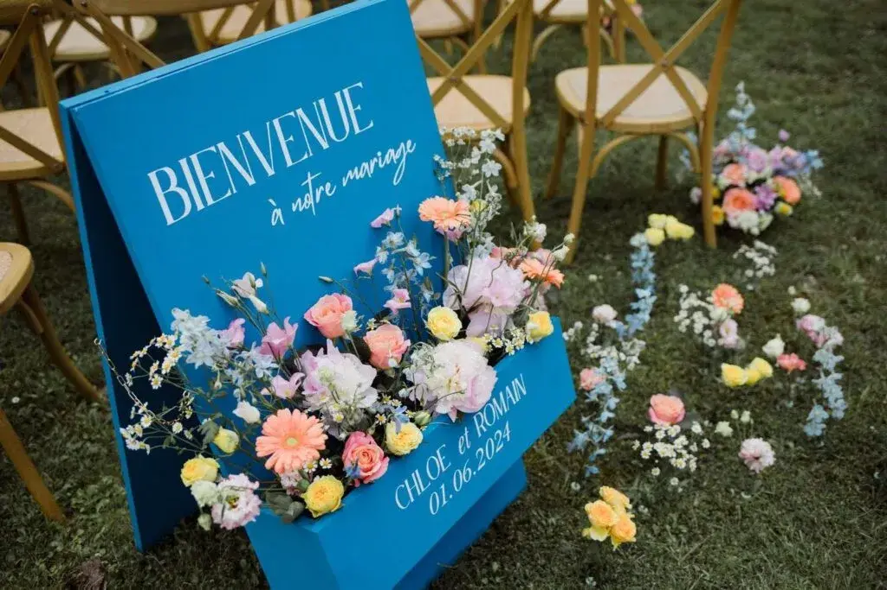

La personnalisation s’impose aujourd’hui comme l’élément central des mariages en 2026. Les couples ne recherchent plus un événement formaté ou impersonnel. Ils souhaitent vivre et offrir une expérience sincère, intime et profondément connectée à leur histoire. Le mariage devient une véritable expression de l’identité du couple, loin des modèles standardisés et des tendances appliquées sans réflexion.
À l’ère des réseaux sociaux, l’inspiration est omniprésente, mais elle peut aussi conduire à une uniformisation des mariages. La personnalisation permet justement de se détacher de ces références répétées pour créer un événement unique, qui fait sens et qui traverse le temps. Il ne s’agit pas d’en faire trop, mais de faire juste, avec intention et cohérence.
Futurs mariés, souhaitez vous que votre mariage vous ressemble réellement, sans compromis, tout en conservant une élégance naturelle et une atmosphère raffinée. En tant que wedding planner, j’accompagne des couples qui veulent donner du sens à chaque choix et imaginer un mariage personnalisé, pensé comme une expérience globale et harmonieuse.
La région bordelaise, avec ses vignobles, ses domaines viticoles et ses lieux d’exception, offre un cadre idéal pour concevoir des mariages uniques, authentiques et intemporels.
Mariage personnalisé : bien plus qu’une tendance
Le mariage personnalisé n’est pas une mode passagère. Il s’agit d’une véritable évolution dans la manière de célébrer l’amour et l’engagement. Chaque élément du mariage devient une opportunité de raconter une histoire, de transmettre une émotion et de créer un souvenir durable.
Un mariage personnalisé repose sur une vision d’ensemble qui mêle esthétique, émotion et expérience. Les choix ne sont jamais faits au hasard. Les couleurs, les matières, les ambiances et les rythmes de la journée sont pensés pour refléter la personnalité du couple. Cette approche permet de créer une cohérence forte et une atmosphère fluide, dans laquelle les invités se sentent pleinement immergés.
Contrairement aux mariages standardisés, le mariage personnalisé valorise la singularité, l’authenticité et l’émotion. Chaque détail a une intention précise et contribue à renforcer le lien entre les mariés et leurs invités.

Tenues de mariés sur mesure, exprimer son identité
Les tenues de mariés deviennent de véritables moyens d’expression personnelle. En 2026, les mariés souhaitent porter des créations qui racontent leur histoire plutôt que de simplement suivre les tendances.
La personnalisation des tenues passe par le choix des coupes, des matières et des détails. Le coton biologique, le lin naturel ou la soie recyclée s’inscrivent dans une démarche plus consciente et responsable. Les broderies discrètes, les initiales ou les dates importantes ajoutent une dimension symbolique forte sans jamais tomber dans l’excès.
Ces tenues personnalisées s’intègrent parfaitement à la direction artistique globale du mariage, créant une harmonie visuelle et émotionnelle tout au long de la journée.


Invitations artisanales, créer le premier souvenir
L’expérience de la personnalisation commence dès l’annonce du mariage. L’invitation est le premier contact émotionnel avec les invités. Elle donne le ton, transmet une ambiance et suscite une attente.
Les invitations artisanales connaissent un véritable renouveau. Calligraphie manuscrite, papiers texturés, impressions délicates et finitions soignées transforment l’invitation en un objet précieux. Chaque choix graphique est pensé pour refléter l’univers du couple et l’atmosphère du mariage.
Le digital personnalisé vient compléter cette approche avec élégance. Mini sites de mariage, vidéos de présentation, RSVP personnalisés permettent d’offrir une expérience fluide et moderne tout en restant intime. L’alliance du papier et du digital renforce la personnalisation sans la dénaturer.

Le menu de mariage personnalisé raconter une histoire à travers la gastronomie
Le repas de mariage devient une véritable narration culinaire. La personnalisation du menu permet de transformer ce moment en une expérience sensorielle et émotionnelle.
La collaboration avec le chef est essentielle. Ensemble, il est possible d’intégrer des souvenirs d’enfance, des voyages marquants ou des recettes familiales revisitées. Le menu devient ainsi un reflet de l’histoire du couple.
La mise en scène du repas, le rythme du service et les accords mets et vins participent pleinement à l’expérience globale.
Dans la région bordelaise, cette approche prend une dimension particulière grâce à la richesse du terroir et à la culture gastronomique locale.
Imaginer des expériences personnalisées pour les invités
La personnalisation prend toute sa dimension lorsqu’elle est pensée aussi pour les invités. Un mariage réussi ne se regarde pas seulement, il se vit. Offrir une expérience personnalisée permet à chacun de se sentir accueilli, impliqué et émotionnellement connecté à votre histoire.
Penser à l’accueil des invités dès leur arrivée est essentiel. Un mot personnalisé, une signalétique douce ou une attention en lien avec le lieu et la saison crée immédiatement une atmosphère chaleureuse. Ces premiers instants donnent le ton de la journée et favorisent une immersion naturelle dans l’univers du mariage.
La personnalisation peut également passer par les moments de partage. Proposer des espaces de discussion, des assises conviviales ou des ambiances musicales adaptées aux différents temps de la journée permet aux invités de vivre le mariage à leur rythme. L’objectif est de créer une expérience fluide et confortable, où chacun trouve sa place sans contrainte.
Les animations gagnent à être pensées avec subtilité. Une expérience réussie ne repose pas sur la multiplication des activités, mais sur leur cohérence avec l’identité du couple. Une animation en lien avec votre histoire, vos passions ou votre culture crée une émotion sincère et favorise le lien entre les invités.
La personnalisation se retrouve aussi dans les attentions portées tout au long de la journée. Un menu adapté aux préférences alimentaires, une attention particulière pour les enfants ou les proches âgés, ou encore des moments dédiés à certains groupes renforcent le sentiment d’être véritablement considérés.
Les cadeaux invités peuvent eux aussi devenir une extension de votre histoire. Choisir un objet utile, durable ou symbolique permet de prolonger l’expérience du mariage bien après le jour J. Lorsqu’il est personnalisé avec justesse, ce souvenir devient un rappel émotionnel fort plutôt qu’un simple accessoire.
Enfin, penser à l’après mariage fait pleinement partie de l’expérience. Un message de remerciement personnalisé, un souvenir partagé ou une attention envoyée après l’événement permet de clore la célébration avec élégance et émotion. Cette continuité renforce le lien créé et laisse une impression durable dans l’esprit des invités.
Imaginer des expériences personnalisées pour les invités, c’est finalement créer un mariage vivant, sincère et profondément humain, où chacun se sent invité à partager bien plus qu’une simple journée, mais un véritable moment de vie.

Conseils pour réussir un mariage personnalisé
La personnalisation prend toute sa dimension lorsqu’elle est pensée aussi pour les invités. Un mariage réussi ne se regarde pas seulement, il se vit. Offrir une expérience personnalisée permet à chacun de se sentir accueilli, impliqué et émotionnellement connecté à votre histoire.
Penser à l’accueil des invités dès leur arrivée est essentiel. Un mot personnalisé, une signalétique douce ou une attention en lien avec le lieu et la saison crée immédiatement une atmosphère chaleureuse. Ces premiers instants donnent le ton de la journée et favorisent une immersion naturelle dans l’univers du mariage.
La personnalisation peut également passer par les moments de partage. Proposer des espaces de discussion, des assises conviviales ou des ambiances musicales adaptées aux différents temps de la journée permet aux invités de vivre le mariage à leur rythme. L’objectif est de créer une expérience fluide et confortable, où chacun trouve sa place sans contrainte.
Les animations gagnent à être pensées avec subtilité. Une expérience réussie ne repose pas sur la multiplication des activités, mais sur leur cohérence avec l’identité du couple. Une animation en lien avec votre histoire, vos passions ou votre culture crée une émotion sincère et favorise le lien entre les invités.
La personnalisation se retrouve aussi dans les attentions portées tout au long de la journée. Un menu adapté aux préférences alimentaires, une attention particulière pour les enfants ou les proches âgés, ou encore des moments dédiés à certains groupes renforcent le sentiment d’être véritablement considérés.
Les cadeaux invités peuvent eux aussi devenir une extension de votre histoire. Choisir un objet utile, durable ou symbolique permet de prolonger l’expérience du mariage bien après le jour J. Lorsqu’il est personnalisé avec justesse, ce souvenir devient un rappel émotionnel fort plutôt qu’un simple accessoire.
Enfin, penser à l’après mariage fait pleinement partie de l’expérience. Un message de remerciement personnalisé, un souvenir partagé ou une attention envoyée après l’événement permet de clore la célébration avec élégance et émotion. Cette continuité renforce le lien créé et laisse une impression durable dans l’esprit des invités.
Imaginer des expériences personnalisées pour les invités, c’est finalement créer un mariage vivant, sincère et profondément humain, où chacun se sent invité à partager bien plus qu’une simple journée, mais un véritable moment de vie.
En bref,
En 2026, la personnalisation devient la véritable signature des mariages contemporains. Elle permet de créer une expérience unique, sincère et profondément humaine, où chaque choix et chaque détail sont porteurs de sens et racontent votre histoire.
Un mariage personnalisé offre la liberté de célébrer à votre rythme, de choisir des éléments alignés avec vos valeurs et de transformer chaque instant en souvenir durable. Loin des modèles figés ou des tendances copiées, il crée des émotions authentiques, pour vous comme pour vos invités, en rendant la journée immersive et chaleureuse.
La personnalisation permet également de penser à vos invités de manière subtile et réfléchie, en créant des moments de partage, des attentions significatives et une ambiance qui reflète votre univers. Chaque détail, du lieu à la décoration, du menu aux animations, participe à une expérience cohérente et mémorable.
En tant que wedding planner, mon rôle est d’accompagner les couples pour que chaque élément trouve sa place, afin que leur mariage à Bordeaux ou dans les plus beaux lieux de Gironde soit à la fois élégant, harmonieux et profondément personnel.
Êtes vous prêts à imaginer un mariage qui vous ressemble vraiment, pensé avec intention, vécu avec intensité et qui laissera des souvenirs inoubliables à vous et à vos invités ?
Lovely Day Event c'est plusieurs types de prestations
L'organisation de mariage
Je vais intervenir sur toutes les étapes de vos préparatifs et vous guider dans vos choix. Je suis force de proposition pour que votre mariage ne ressemble qu’à vous.
Décoration de mariage
Créative et passionnée, je suis certifiée Wedding Designer et je conçois une ambiance scénographique qui correspond au thème de votre mariage.
Coordination le jour J
Je serai le chef d’orchestre pour gérer les différents prestataires, la mise en place de votre décoration et le déroulement de cette belle journée.